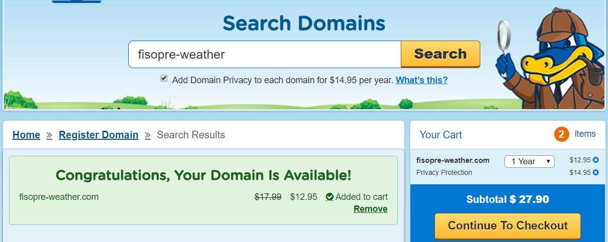

An appropriate site name
Fisopre Weather
The weather in Fish Haven, Soda Spring, Preston.
Site Purpose
The purpose of this website is to be able to report the weather
and the storm forecast, to the inhabitants of the cities of
Fish Haven, Soda Spring, Preston.
An available domain name
Logo